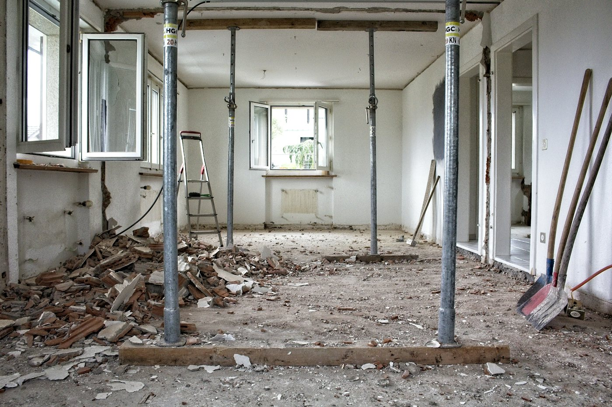
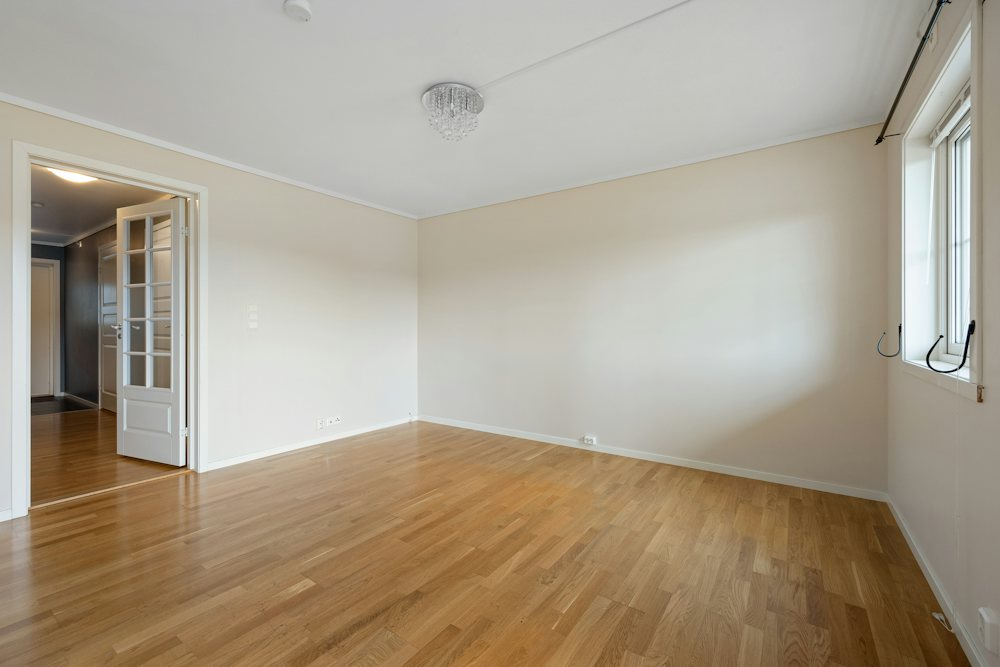

Sant'Agostino di Albignasego · Padova
Finiture e lavori edili ad Albignasego, dal 1994.
Completamento e finitura degli edifici, a due passi da Padova. Il nome Masin, nel registro delle imprese da oltre trent'anni.
- 32 annicostituita nel 1994
- S.a.s.di Masin Elena e C.
- Vicolo Pacinotti 25Sant'Agostino, Albignasego
- Padova sude dintorni
Prima e dopo
Dal grezzo al finito.
- 01Il cantiere: puntelli, calcinacci, muri da chiudere.
- 02Il completamento: pareti, soffitti, pavimenti, serramenti al loro posto.
- 03La finitura: una stanza pulita, luminosa, pronta da abitare.

PrimaDopoLavori
Quello che resta da fare, fatto bene.
Il registro delle imprese ci descrive con una frase precisa: lavori di completamento e di finitura degli edifici. È la parte del cantiere che si vede tutti i giorni, quando si entra in casa.
Dopo la struttura, tutto quello che serve per chiudere il lavoro: le opere che trasformano un cantiere in un edificio finito.
Le finiture di case, uffici e locali: i dettagli che decidono se un lavoro sembra fatto bene o fatto in fretta.
Siamo un'impresa edile di Albignasego: per un lavoro in casa o in un edificio, chiamate e ne parliamo.
L'impresa
Un nome di Albignasego, dal 1994.
Masin Otello S.a.s. di Masin Elena e C. nasce nel 1994. Oggi la sede è in Vicolo Antonio Pacinotti 25, a Sant'Agostino di Albignasego: il comune alle porte di Padova, verso sud.
Trentadue anni di attività nella provincia di Padova: per un lavoro da finire, basta una telefonata allo 049 685270.

Albignasego, Padova e la cintura sud.
- Albignasego
- Padova
- Maserà di Padova
- Casalserugo
- Abano Terme
La sede è a Sant'Agostino. Questi sono i comuni più vicini, a pochi minuti da Vicolo Pacinotti.
Contatti
Raccontateci il lavoro da finire.
- Telefono049 685270
- SedeVicolo Antonio Pacinotti 25, 35020 Sant'Agostino di Albignasego (PD)
Vicolo A. Pacinotti 25
35020 Albignasego (PD)